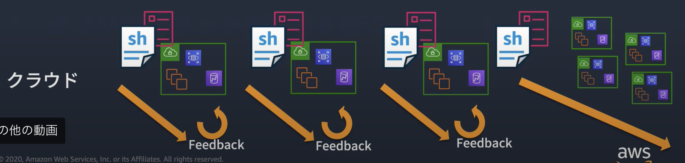
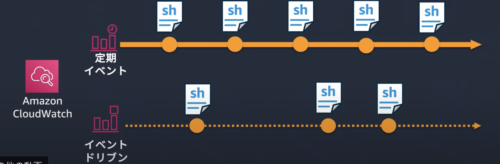
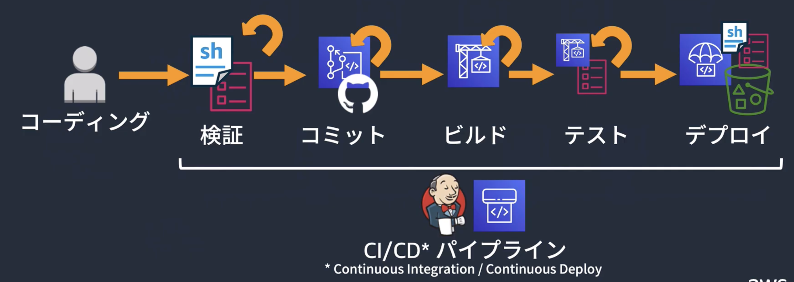
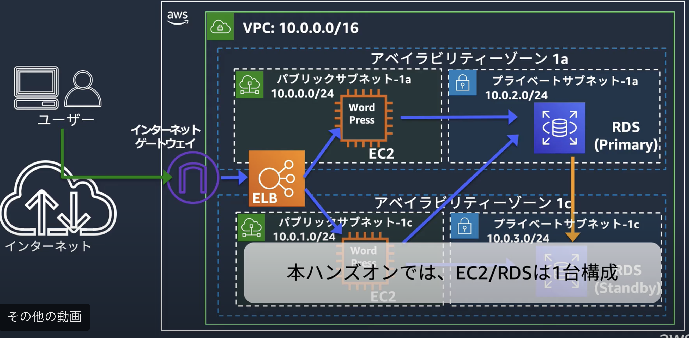
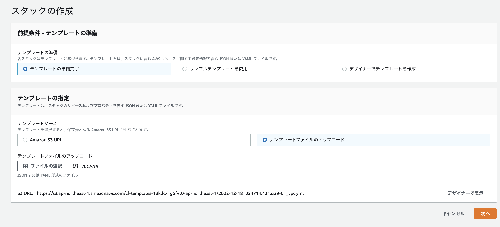
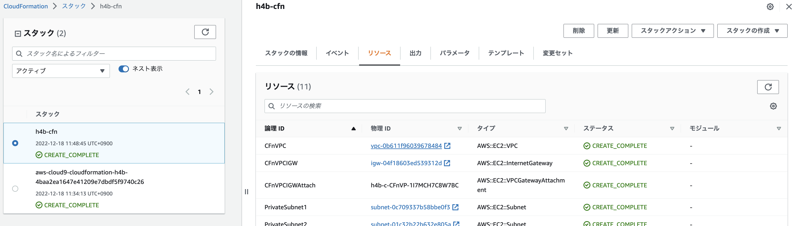
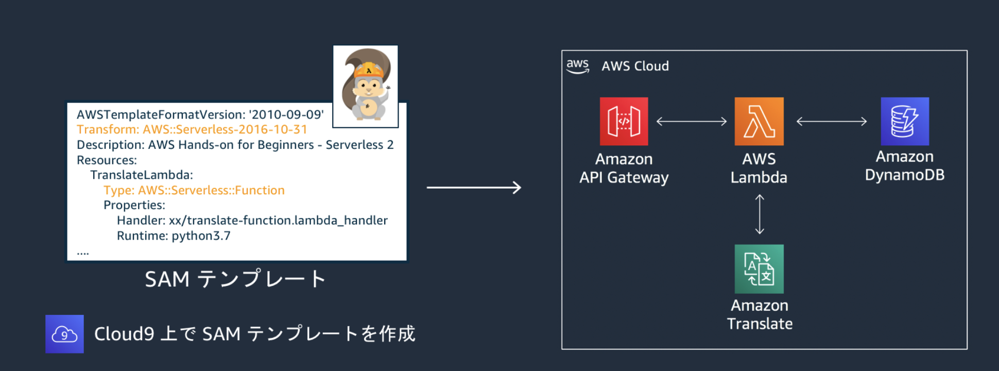

11. 環境構築自動化¶
11.1. CloudFormation¶
JSONやYML形式のテンプレートファイルを作成することで、AWSリソースの環境を自動で構築してくれる。 構築されたリソースの集合をスタックと呼ぶ
11.1.1. 環境のコード管理のメリット¶
コード管理することで環境構築の時間的コストの削減や再現性の担保ができるまた、インフラの品質担保をすることができる。 バックアップやログ集計に関しても手作業ではなく、コード管理することで人為的ミスを防ぐことができる
Well-Architectedであるという柱の中に「運用上の優秀性」があり、その中のポイントとして「運用をコードとして実行する」がある
11.1.2. 運用をコードとして実行する¶
３つのポイントがある
コードで全ての構成を定義
同じ環境を、迅速に、繰り返し作成することができる。

イベントに対してスクリプトで対処
自動的に定期的、イベントドリブンで処理を実行することができる。
トラブルが発生したとしても、初期対応を自動化することができる

アプリと一緒の方法でインフラコードを管理
品質をきちんと担保するために、Appと同様にテストなどを実行して品質を担保するべき

11.1.3. 基本動作¶
作成は設定したリソースを自動で作成することができ、依存関係は自動で解決してくれる。 削除に関しても依存関係は自動で解決してくれる。
11.1.3.1. テンプレートとスタック¶
JSONやYMLでテンプレートを作成することができ、CloudFormationによってリソースが作成される。 作成されたリソースはスタックと呼ばれる。 作成が失敗した場合、ロールバックする。
11.1.3.2. テンプレートの基本¶
必須項目はResourcesのみ。Resourcesに作成するサービスの詳細を記述していく。
作成するサービスには論理名（表示名）を付与するが、一つのCFN内でユニークである必要がある。
11.1.3.3. テンプレートの文法¶
環境ごとに作成するか否かの条件分岐を行う際にはCondistionを利用する。
Parametersセクションで設定するvalueを定義
Conditionsセクションで条件の論理名と真偽判定
Conditions:
IsProduction: !Equals [!Ref Env, "production"]
IsEC2Role: !Not [!Equals [!Ref EC2Role, ""]]
IsPublic: !Equals [!Ref Scope, "public"]
Resourcesセクションで確認するConditionと作成するリソース情報を定義
Resources:
MyEC2:
Type: AWS::EC2::Instance
Condition: IsProduction
Properties:
...
こちらのサイトがわかりやすい
11.1.4. Hands on¶
以下の詳細説明については、CFのHandsOnBeginners
を参考にして、サンプルコードなどを例示する。
作成する環境は以下

11.1.4.1. テンプレート¶
作成するスタックの設計図
細かい利用方法などはテンプレートリファレンスを参照する。
11.1.4.1.1. VPC作成のテンプレート例¶
Resourcesは必須設定で、作成するリソースを記述し、その内部で必要な値を設定する
AWSTemplateFormatVersion: 2010-09-09 # versionは現在2010-09-09のみ
Description: Hands-on template for VPC # テンプレートのコメント
Resources: # 必須項目で作成するAWSリソースの概要
CFnVPC: # CFNのリソースで表示する論理名
Type: AWS::EC2::VPC # 作成するサービス
Properties: # 各サービスごとに設定する設定値
CidrBlock: 10.0.0.0/16
InstanceTenancy: default
EnableDnsSupport: true
EnableDnsHostnames: true
Tags: #名前など
- Key: Name
Value: handson-cfn
11.1.4.1.2. EC2作成のテンプレート例¶
EC2の設定では、vpcで作成したサブネットの設定やユーザーデータの設定もPropertiesから設定できる。
Resources:
EC2WebServer01:
Type: AWS::EC2::Instance
Properties:
ImageId: !Ref EC2AMI
InstanceType: t2.micro
SubnetId : subnet-0a53e2e7cee6f9153
# UserDataの設定と、Base64の参照
UserData : !Base64 |
#! /bin/bash
yum update -y
...
systemctl start httpd.service
# セキュリティグループとの紐付け
SecurityGroupIds:
- !Ref EC2SG
11.1.4.1.3. SecurityGroup作成のテンプレート例¶
紐付けるVPCの設定やインバウンド・アウトバウンドの設定を記述する
EC2SG:
Type: AWS::EC2::SecurityGroup
Properties:
GroupDescription: sg for web server
VpcId: vpc-0696dbbf6a234b2ef
SecurityGroupIngress:
- IpProtocol: tcp
CidrIp: 10.0.0.0/16
FromPort: 80
ToPort: 80
11.1.4.2. テンプレートの詳細説明¶
11.1.4.2.1. 組み込み関数¶
PublicSubnet1:
Type: AWS::EC2::Subnet
Properties:
CidrBlock: 10.0.0.0/24
VpcId: !Ref CFnVPC #!Refにより、論理名を参照する
AvailabilityZone: !Select [ 0, !GetAZs ] # !GetAZsはアベイラビリティーゾーンの指定
MapPublicIpOnLaunch: true
Tags:
- Key: Name
Value: PublicSubnet1
11.1.4.2.2. Parameters¶
Resourcesで利用するための変数を設定しておく
Parameters:
VPCStack:
Type: String
Default: handson-cfn
EC2AMI:
Type: AWS::SSM::Parameter::Value<AWS::EC2::Image::Id>
Default: /aws/service/ami-amazon-linux-latest/amzn2-ami-hvm-x86_64-gp2
11.1.4.2.3. Outputs¶
他のテンプレート から呼び出される、リソースが出力する値を記述するのに使う。
あるテンプレートで作成したスタックの情報を別のテンプレートから参照するクロススタックリファレンスではOUTPUTの定義が必須。
Outputs:
EC2WebServer01:
Value: !Ref EC2WebServer01
Export:
Name: !Sub ${AWS::StackName}-EC2WebServer01
11.1.5. 環境構築方法¶
11.1.5.1. AWSコンソールからの実行¶
GUIなので何をしているのかが分かり易いのがメリット、繰り返し実行や試行錯誤はし難い
作成したテンプレートをAWSのマネジメントコンソールからアップロードして利用
cfnの「スタックを作成」から、「新しいリソースを利用（標準）」

作成されたスタックについてはリソースタブでまとめて確認できる。

11.1.6. AWS CLIからの実行¶
CLIなので、繰り返し実行や試行錯誤がやり易い
H4Bでは、AWS-CLI設定済のCloud9からの実行している。
11.1.6.1. スタックの作成¶
aws cloudformation create-stack --stack-name [YOUR_STACK_NAME] --template-body file://[YOUR_TEMPLATE_FILE]
11.1.6.2. 作成したスタックの更新¶
作成したテンプレートファイルの文法チェック
aws cloudformation validate-template --template-body file://[YOUR_TEMPLATE_FILE]
文法に問題がないと以下が返却される
{ "Description": "Hands-on template for VPC", "Parameters": [] }
更新の実行
aws cloudformation update-stack --stack-name [YOUR_STACK_NAME] --template-body file://[YOUR_TEMPLATE_FILE]
11.1.7. 深掘り機能¶
11.1.7.1. ネストッドスタック¶
複数のテンプレートで親子関係を構成することができる。
実行手順
親側に
AWS::CloudFormation::Stackリソースて押してこテンプレートのスタックを定義子側のテンプレート作成
親側で子テンプレートのパスを指定
aws cloudformation packageコマンドを実行してS3にpush
11.1.7.2. カスタムリソース¶
CFNのテンプレートに存在しないリソース処理を噛ませる場合にはカスタムリソースを利用する。 基本的な動きとしてはLambdaで機能を作り込んで、CustomのResourceでLambdaのARNをServiceTokenに指定することで、作り込んだLambdaが実行される
11.1.7.3. チェンジセット¶
更新しようとしているテンプレートと、作成済のテンプレートの差分を検出する機能。
11.1.7.4. ドリフト検出¶
現状のリソースと作成した際のテンプレート定義の差分を検出する機能
11.1.7.5. スタックセット¶
１つのテンプレートを複数のAWSアカウントおよびリージョンに展開する
11.1.8. CloudFormation デザイナー¶
AWSコンソールからGUIでテンプレートを作成できる機能
11.2. Serverless Application Model¶
CloudFormationの拡張機能で、サーバレスアプリケーションをより簡易的な記述で定義構築する。 LambdaやAPIGWなどのサーバーレスサービスについては、CloudFormationでも記述構築できるがSAMの方が記述量少なくスマートにテンプレートを記述できる
11.2.1. SAM実行の流れ¶
コードの開発
パッケージング（この段階でappをS3にアップロードしている）
デプロイ（CFが実行されて、構築される）
11.2.2. 具体的な差分¶
基本的な記述方法はCloudFormationとあまり変わらないが細かい部分で差分はある
11.2.2.1. SAMの宣言¶
最初の定義で、自分がCFNではなくて、SAMであることを宣言する
Transform: AW::Serverless-2016-10-31
CFNと同様にResourcesが必須項目であるが、Transformも必須項目である。
11.2.2.2. Resource¶
Resourceに置いても、サーバレスに特化した記述方法がある
SAM用のTypeが6つ準備されている
AWS::Serverless::Function → Lambda
AWS::Serverless::Api → APIGW
AWS::Serverless::SimpleTable → DynamoDB
11.2.2.3. Globals¶
Globalsという複数リソースの設定をまとめて行う設定がある点が差分
11.2.3. Hands on¶
以下の詳細説明については、SAMのHandsOnBeginners
を参考にして、サンプルコードなどを例示する。
作成する環境は以下で、構成としてはAPIGWで公開されているAPIに対してリクエストした文字列（JP）を翻訳して（EN）返すアプリケーションを作成する。

11.2.3.1. S3バケットの作成¶
SAMではS3にある資材を利用する必要があるので、格納先のS3を作っておく
AWS CLIがあれば以下のコマンドで作成可能
aws s3 mb s3://your-backet-name
11.2.3.2. samの作成¶
SAMの公式リファレンスを 参照しながらLambdaを作成するSAMを作成する。
作成するのは、SAMのテンプレートコードと作成するLambdaの関数。
SAMで利用する資材はS3に置いておく必要がある。今回で言うとCodeUriに記述されているLambda関数の中身。
パッケージングをすることでSAM側で自動でS3に格納と、読み込み先の変換を処理してくれる
AWSTemplateFormatVersion: '2010-09-09'
Transform: AWS::Serverless-2016-10-31
Description: AWS Hands-on for Beginners - Serverless 2
Resources:
# Lambdaを作成
TranslateLambda: # 論理名
Type: AWS::Serverless::Function # Lambdaを作成する
Properties:
FunctionName: translate-function-2
CodeUri: ./translate-function # CodeUrlでLambda関数の格納場所を記載するか、InlineCoddeで直接コードを書く
Handler: translate-function.lambda_handler
Runtime: python3.7
Timeout: 5
MemorySize: 256
Policies: # 付与するポリシー
- TranslateFullAccess
- AmazonDynamoDBFullAccess
# Lambda側でAPI GWとの連携について定義する
Events:
GetApi:
Type: Api
Properties:
Path: /translate
Method: get
RestApiId: !Ref TranslateAPI
# API GateWayを作成
TranslateAPI: # 論理名
Type: AWS::Serverless::Api
Properties:
Name: translate-api-2
StageName: dev # 必須項目
EndpointConfiguration: REGIONAL
# DynamoDBを作成
TranslateDynamoDbTbl: # 論理名
Type: AWS::Serverless::SimpleTable
Properties:
TableName: translate-history-2
PrimaryKey:
Name: timestamp
Type: String
ProvisionedThroughput:
ReadCapacityUnits: 1
WriteCapacityUnits: 1
11.2.3.3. SAMのpackage¶
template-fileでSAMファイルを指定
s3-bucketでappの出力先のs3を指定
output-template-fileでappの読み込み先を変換したSAMファイルの出力名を指定
aws cloudformation package \
--template-file template.yaml \
--s3-bucket *your-backet-name* \
--output-template-file packaged-template.yaml
aws cloudformation package ではなく、sam packageでもOK
11.2.3.4. SAMのdeploy¶
stack-name：cfnの作成されるスタック名
capabilities：IAM関連の操作を許す
aws cloudformation deploy \
--template-file ./packaged-template.yaml \
--stack-name hands-on-serverless-2 \
--capabilities CAPABILITY_IAM
aws cloudformation deploy ではなく、sam deployでもOK
11.3. Elastic Beanstalk¶
典型的なシステム構成をテンプレートから選択して、自動でアプリケーション環境を構築するサービス。 PaaSを実現するサービス
11.3.1. 設定対象¶
アプリケーションの言語や環境、インスタンスの構成、利用するサービスの設定、オートスケーリングの設定、ネットワークやDBの設定
11.3.2. デプロイ戦略¶
5種類のデプロイ戦略が準備されている
11.3.2.1. All at once¶
アプロケーションインスタンスをすべて同時に更新する
11.3.2.2. Rolling¶
実行中のインスタンスを一定の単位で差し替えていく。 ３個中２つを停止して、差し替えて、最後に１つを差し替える
11.3.2.3. Rolling with additional batch¶
Rollingは最大数が決まっていて、その中でRolling Deployしていたが、バッチ分だけインスタンス数を一部追加してDeoloyする。
実行中のインスタンスに、加える形で新規のインスタンスをバッチ分だけ追加する。 差し変わったら、古いインスタンスを落とす
11.3.2.4. Immutable¶
一時的なオートスケーリングのグループを作成。 一時的なグループ内で１台分のヘルスチェックや台数の拡張を実施。 そのため、差し戻す場合も簡単に差し戻せる。 動作確認が済んだら、既存のオートスケーリンググループに新規のサーバーを割り当て直す 一時的なオートスケーリンググループと古いサーバーを落とす。
11.3.2.5. Traffic Splitting（Canary方式）¶
既存と新規を同時に立ち上がる状態にして、どちらにも割り振る状態を経ながら、だんだん新規に流していく